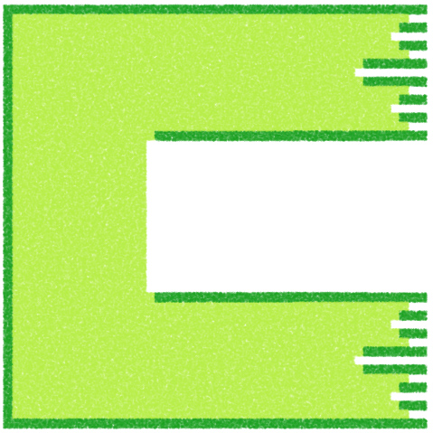
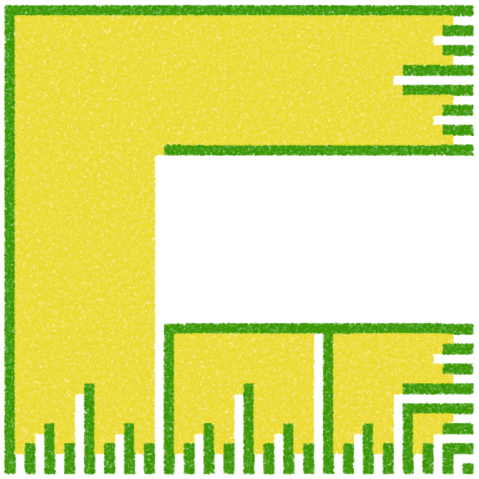
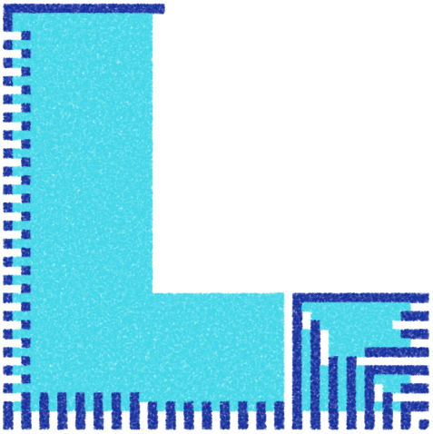

Notes sur les automates génétiques
et article contient une série de notes un peu éparpillées prises alors que je me familiarise avec les algorithmes génétiques et, plus particulièrement, leurs applications dans les automates cellulaires. Je ne suis pas certain que ces notes puissent servir à quiconque à part moi, mais elles ont néanmoins leur place dans un journal de travail.
Si un système d’automates cellulaires a un « voisinage » de 9 cellules, et que chacune de ces cellules peut avoir un état de 0, 1 ou 2, un exemple de voisinage possible pourrait s’écrire : "101022010". Ça me limiterait cependant à 10 états possibles (de 0 à 9) pour un système. Une autre façon d’encoder un voisinage serait :
let neighborhood = [0, 1, 0, 11, 13, 2, 20, 1, 0];Ici, je ne serais pas limité à 9 états possibles. Mais, dans tous les cas, comment ferais-je pour générer chacune des règles d’un système ?
let rule = {
neighborhood: [0, 1, 0, 11, 13, 2, 20, 1, 0],
newState: 0
};Si j’encodais l’adn d’un système dans un nombre à base 5, je pourrais par exemple avoir "031423021" comme voisinage. Dans ce cas, j’aurais 59 (ou 1953125) possibilités, donc je gagnerais beaucoup à compresser l’information le plus possible.
Disons qu’il y a toujours 9 voisins, et que la « base » du système (le nombre d’états possibles dans une cellule) peut aller de 2 à 8. Une règle doit donc être définie par une valeur texte de 10 positions : les 9 positions du voisinage présent et la nouvelle position à adopter par la cellule du milieu. Mais donc… comme toutes les possibilités de voisinages seront toujours considérées dans le même ordre… l’ensemble des règles d’un système est en réalité… une seule valeur texte qui possède b9 positions, où b est la base utilisée par le système. Chaque donnée de ce texte sera un chiffre de 0 à b−1.
Chaque membre ti de ce texte représente une nouvelle position t à appliquer lorsque le voisinage i est présent. Le voisinage i est une représentation décimale d’un nombre dont la base ∈[2;8].
Par exemple, si j’utilise une base de 5, je pourrais avoir un voisinage v={1,0,4,0,2}. Je considère donc ce voisinage i=104025, donc i=72710. Donc, je vais chercher la valeur 727 dans mon texte qui définit l’ensemble des règles.
Je viens d’écrire un algorithme pas trop compliqué pour convertir des nombres décimaux en nombres à base b. Il est certain que cet algorithme pourrait être grandement optimisé.
let originalNumber = 727;
let base = 5;
let factors = [];
let n = originalNumber;
let powers = [1];
let b = base;
for (let i = 0; i < 10; i++) {
powers.push(b);
b *= base;
}
let counter = 0;
while (originalNumber > base) {
while (originalNumber >= powers[counter]) {
n = powers[counter];
counter++;
}
originalNumber -= n;
factors.push([n, counter - 1]);
counter = 0;
}
if (originalNumber) {
if (originalNumber == base) {
factors.push([originalNumber, 1]);
} else {
factors.push([originalNumber, 0]);
}
}
let convertedNumber = [];
for (let i = 0; i < factors.length; i++) {
let increment = factors[i][1];
if (increment == 0) {
convertedNumber[increment] = factors[i][0];
} else {
if (!convertedNumber[increment]) {
convertedNumber[increment] = 1;
} else {
convertedNumber[increment]++;
}
}
}
let revertedNumber = "";
for (let i = convertedNumber.length - 1; i >= 0; i--) {
if (convertedNumber[i] > 0) {
revertedNumber += convertedNumber[i];
} else {
revertedNumber += 0;
}
}
console.log(factors);
console.log(convertedNumber);
console.log(revertedNumber.toString());J’ai aussi écrit cet autre algorithme, qui convertit un nombre à base b en nombre décimal (c’est finalement cet algorithme dont je me sers). Il est très simple mais semble fonctionner.
// This method receives a number in base this.geneticBase
// as a string, and returns a decimal number, as an integer.
Scene.prototype.applyRules = function(r) {
let s = r;
let b = this.geneticBase;
let ns = "";
for (let i = s.length - 1; i >= 0; i--) {
ns += s[i];
}
let decimal = 0;
for (let i = 0; i <= ns.length - 1; i++) {
decimal += parseInt(ns[i]) * Math.pow(b, i);
}
return this.geneticRules[decimal];
};Il me faut aussi créer des ensembles aléatoires de règles :
// b étant la base
let b = 5;
let r = "";
let rl = Math.pow(b, 9);
for (let i = 0; i < rl; i++) {
r += Math.floor(Math.random() * b);
}En fait, je viens de réaliser qu’un système à base de 5 crée un ensemble de règles à 1953125 caractères, ce qui pèse (logiquement) 2 Mo lorsque sauvegardé dans un fichier texte. Comme mon système me demandera de sauvegarder une grande quantité de tels fichiers, je devrais me limiter à b∈[2;4], puisque 49=262144 ce qui produit un fichier de 262 ko. Ça me paraît plus raisonnable.
Créer et évaluer une population
omment ferai-je pour créer et évaluer une population, et pour croiser des individus et créer leurs enfants ? Premièrement, la sélection sera interactive : c’est-à-dire que la seule valeur d’un individu sera déterminée par moi, qui lui assignera un score. Il me faudrait donc une liste population qui serait un ensemble de couples (i,s) où i est un individu et s son score.
Il me faut une liste d’individus, sauvegardée dans un fichier json. Ce sera mon ensemble de couples. Il me faut un bouton pour générer un nouvel individu aléatoire. Il me faut un bouton pour réduire ou augmenter le score de cet individu, et il me faut un bouton pour le sauvegarder dans un fichier.
Ça va donc fonctionner de façon relativement analogue à mon ensemble de palettes : je peux charger une palette déjà sauvegardée, je peux en générer des nouvelles, et je peux sauvegarder sur le disque les palettes que j’apprécie. Maintenant, j’aurai un bouton « Generate ruleset randomly » et un autre « Generate ruleset from crossover ». Ce deuxième bouton sélectionnera deux individus de la population sauvegardée et créera un nouvel individu en croisant leurs données.
Le fichier d’un individu contiendra à la fois son « adn » et son score. Ce sera beaucoup plus simple ainsi. Très important : un individu doit aussi contenir sa base, et une population est en fait « l’ensemble des individus sauvegardés sur le disque qui ont la même base ». Je ne peux évidemment pas croiser des individus à bases différentes. Donc, lorsque je commence une « session » d’expérimentations, je dois choisir ma base, et celle-ci permettra à mon système de ne considérer qu’un sous-ensemble de tous les individus sauvegardés sur le disque.
Conclusions du moment
a première implémentation des algorithmes génétiques dans mes animations d’automates cellulaires a nécessité beaucoup de travail et, en chemin, j’ai créé plusieurs systèmes différents. Chacun de ces systèmes fonctionne d’une façon distincte, autant pour l’encodage de l’adn (le génotype) que l’utilisation de ce code génétique dans les méthodes de mise à jour de la grille (le phénotype). Les quelques systèmes que j’ai trouvés les plus intéressants sont contenus dans le fichier scenes-genetic-01.js dans le dossier GitHub du projet. Les scènes sont numérotées de geneticScene01 à geneticScene07.
geneticScene05 est la scène qui m’a le plus occupé jusqu’à maintenant ; en explorant ses possibilités, j’ai noté plus d’une centaine d’animations différentes qu’elle peut générer et je compte les rassembler afin de créer un court film d’animation.
Contexte
Cette note de blog fait partie de mon projet de recherche Vers un cinéma algorithmique, démarré en avril 2018. Je vous invite à consulter la toute première note du projet pour en apprendre davantage.